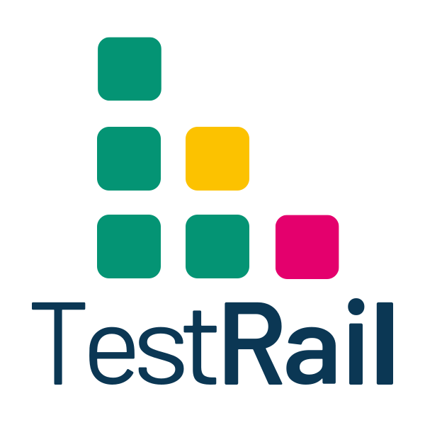
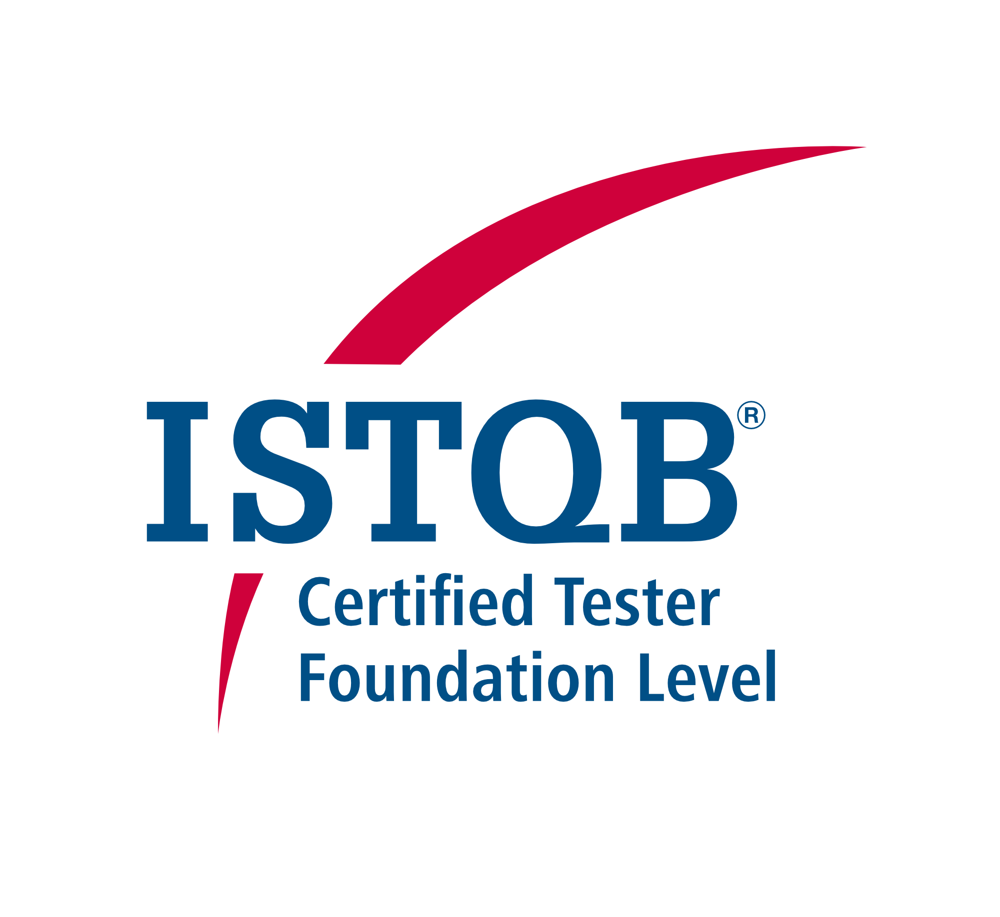
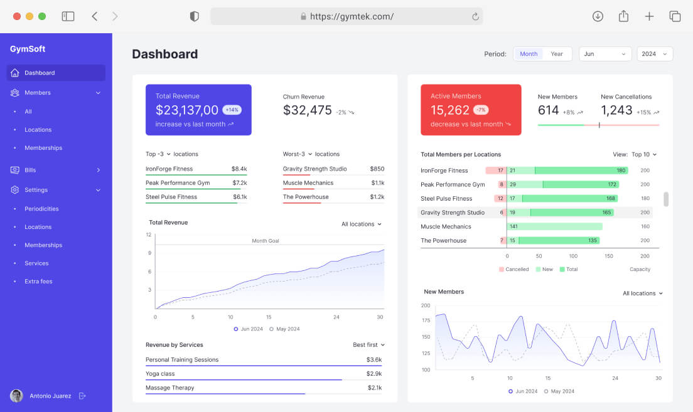
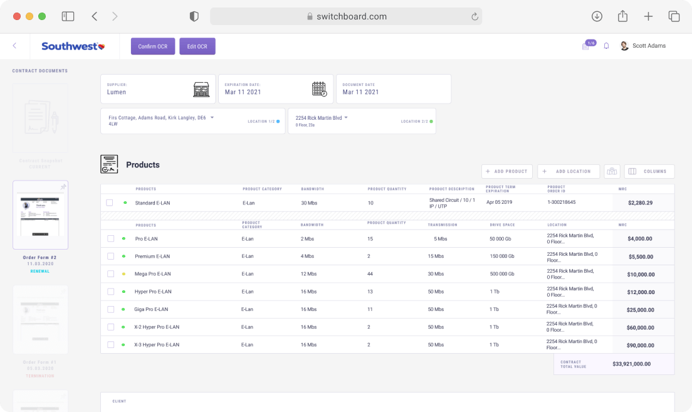

Experience
As a QA Engineer at SoftKraft, I worked in a fast-paced, R&D-driven environment with minimal documentation and rapidly evolving requirements. I contributed across multiple stages of the development lifecycle—from requirement clarification and test design to automation, CI/CD integration, and release validation.
Key Responsibilities & Achievements:
Key Responsibilities & Achievements:
- Developed and maintained end-to-end automated test suites using TypeScript and Playwright, integrated into GitHub Actions pipelines.
- Validated RESTful APIs using Postman and Swagger, ensuring seamless and reliable data exchange across services.
- Performed both manual and automated UI tests using BrowserStack.
- Worked closely with developers, product owners, and designers in Figma, Slack, and GitHub to triage, reproduce, and resolve bugs.
- Created, maintained, and executed test plans and test cases in TestRail.
- Supported performance and basic security testing as part of release validation cycles.
Skills & Tools
★★★★★Manual testsExcellent
★★★★★Test AutomationExcellent
 ★★★☆☆REST APIIntermediate
★★★☆☆REST APIIntermediate★★★★☆TypeScript/JavaScriptAdvanced
 ★★★★★GitExcellent
★★★★★GitExcellent★★★★☆Cypress/PlaywrightIntermediate
★★★★☆PostmanAdvanced★★★☆☆Jira/Clickup/NotionIntermediate
★★★★☆Testing Scenarios/DocumentationIntermediate

★★★★☆TestRail/QaseIntermediate★★★★☆GitHubAdvanced★★★★☆AgileIndependent
★★★☆☆BrowserstackIndependent
Functional Domains
- Business Process Optimisation and Automation
- Data Processing and Analysis
- Software Quality Strategy & Process Design
 Test Analysis & DesignTest AutomationUX/UI TestingPerformance OptimisationIntegration TestsWorkflow Management
Test Analysis & DesignTest AutomationUX/UI TestingPerformance OptimisationIntegration TestsWorkflow ManagementCertificates

Projects for customers

Comprehensive Gym Management Software
A comprehensive web app ERP dedicated to gym services: member management, class scheduling, payments, and reporting. The platform integrates attendance, class and event service, and community needs under one interface.
Contribution: Created and maintained automated testing using Playwright, improved test reliability and coverage, integrated with CI/CD, and collaborated with the team for requirements and bug triage.

Contract Lifecycle Management Solution
End-to-end testing of a contract management platform with complex workflow automation and document processing capabilities.
Contribution: Developed and executed automated tests, API validation, and collaborated with DevOps for CI/CD and release validation.
Efficient Data Processing for Real Estate System
Testing of a data processing system for real estate applications with complex data validation and reporting features.
Contribution: Responsible for validating technical quality and functionality, including CI/CD, customer acceptance, and performance management deliveries.
Languages
English
★★★★★
C1
Polish
★★★★★
Native
Italian
★★☆☆☆
Basic
French
★★☆☆☆
Basic